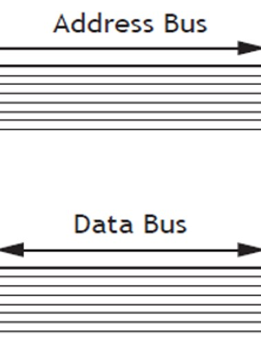

Buses
In a computer, all the program instructions are stored in memory and transferred to the processor one instruction at a time to be executed. To do this there must be connections between the processor and memory. These connections are known as buses.

A bus is a group of wires used collectively to transmit information.
Two of the buses that connect the processor and memory are as follows:
- The Address Bus identifies the memory location that is going to be accessed. It is only a one-way bus as only the processor can specify the memory address.
- The Data Bus transfers data between the processor and memory and vice versa. It is a two-way bus as information can be written from the processor to memory and read from memory to the processor.
- The Control bus carries control signals from the processor to other components. The control bus also carries the clock's pulses. The control bus is unidirectional.